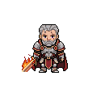

아르덴
24,860
전투력
Lv
37
/ 60
스킬
+3
/ 5
1,240
86
강화
환생
도감
미션
업적
상점
무한 전선 · FRONTIER
Stage
27
/
∞
Stage 26
전투
클리어
Stage
27
/ ∞
현재 전선
테마
전투
내 전투력
24,860
VS
권장 전력
26,400
권장 전력 미달
−1,540
철벽·중장갑
약점
마법 취약
미도전
첫 보상
640
골드
Stage 28
전투
잠금
Stage 27
정복 시 해금
무한 전선
Stage 27 진입